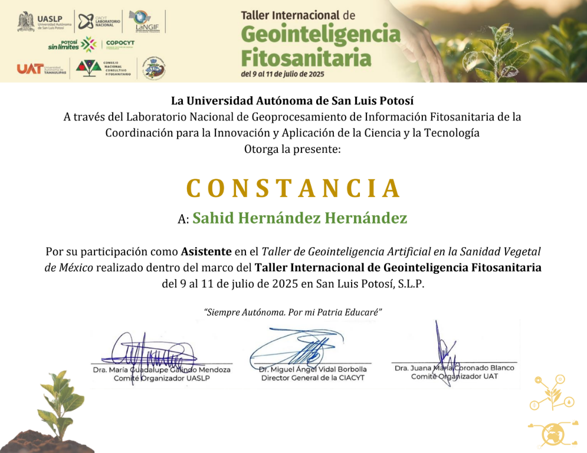
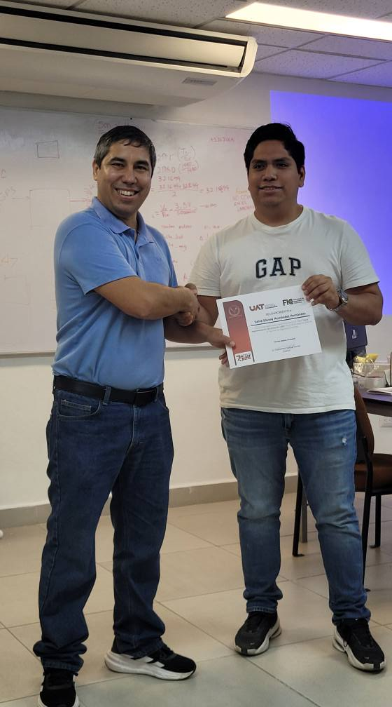
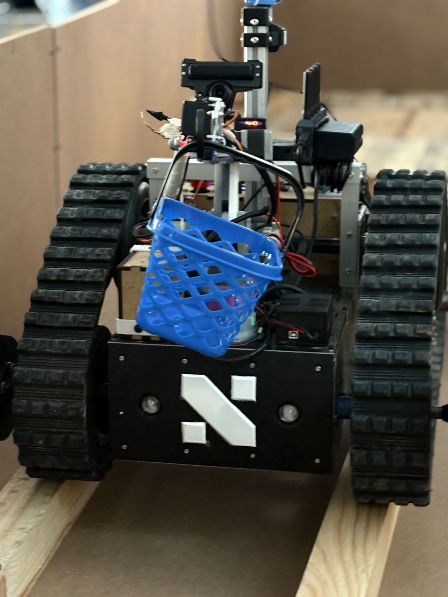
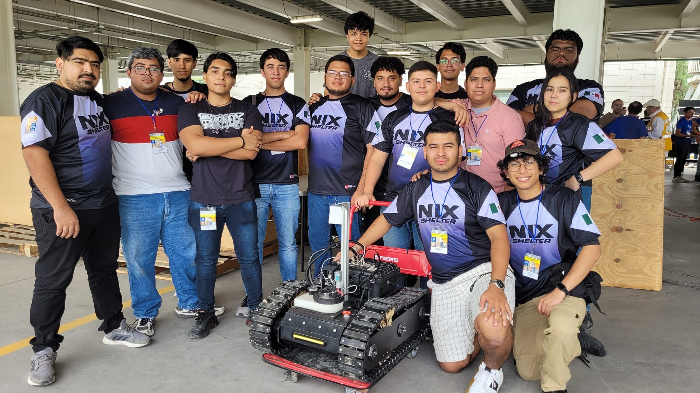

Trayectoria y Bitácora de Campo
Más allá del código, me mueve la experimentación constante. A continuación, te comparto los desafíos que he enfrentado, las competencias y los proyectos que he visto cobrar vida.
Rumbo a RoboCup 2026 (Incheon, Corea del Sur)
Organización: Nix-Lab | Equipo: Sentinel NXL
Diseño, optimización y preparación del sistema robótico autónomo para representar a México en el certamen mundial de robótica.
1er Lugar Nacional - Torneo Mexicano de Robótica (Puebla)
Equipo: Sentinel ACL
Desarrollo de periféricos y algoritmos de visión computacional para reconocimiento en entornos dinámicos, obteniendo el campeonato nacional.

Ingeniero en Robótica y Gemelos Digitales - Ai Cistem Labs
Desarrollo de funciones de autonomía sobre plataformas cuadrúpedas (Unitree Go2) destinadas a seguridad. Especialización en simulación avanzada utilizando tecnologías de NVIDIA (Isaac Sim e Isaac Lab) para validación de algoritmos.


Divulgación Científica y Gira Tecnológica
Expositor en el "Día del Investigador" con el proyecto de robot agronómico y ponente en diversas instituciones con la investigación: "Implementación de un sistema de navegación reactiva y planificación de cobertura para un robot móvil agrícola".

Publicación de Artículos Científicos e Investigación
Difusión de conocimiento y desarrollo metodológico en revistas especializadas:
Un análisis profundo sobre cómo la convergencia de tecnologías embebidas y modelos predictivos optimizan los entornos de cultivo y la gestión fitosanitaria.
Leer Publicación →Coautoría en el diseño de un framework de Machine Learning basado en metamodelos ensamblados para el soporte de decisiones médicas críticas en tiempo real.
Ver en ResearchGate / Journal →8vo Lugar Mundial - RoboCup 2025 (Salvador de Bahía, Brasil)
Equipo: Nixito (Líder de Control y Teleoperaje)
Diseño de sistemas de teleoperación de baja latencia aptos para escenarios de desastre globales, posicionándonos en el Top 8 mundial frente a 18 países.


Taller Internacional de Geointeligencia Fitosanitaria
Especialización técnica enfocada en la integración de la IA en la agronomía moderna y los retos de monitoreo inteligente de cultivos.


Ponente e Instructor Invitado - UAT
Impartición de la cátedra y taller práctico "Uso e implementación del protocolo LoRa" a estudiantes de Telemática de la Facultad de Ingeniería y Ciencias.


4to Lugar Nacional y Clasificación Internacional - TMR
Equipo: NXL-ALPHA
Obtención del cuarto puesto nacional y el pase directo al mundial de robótica en Brasil.


Visión Artificial: Clasificación Biológica (CNN)
Colaboración en el desarrollo y entrenamiento de un modelo de Redes Neuronales Convolucionales (CNN) para la detección y monitoreo del Pez León (especie invasora).
5to Lugar Nacional - TMR (Rescue Major)
Equipo: Shelter
Diseño de la Unidad de Control Teleoperada (UCT), optimizando la interfaz y comunicaciones críticas operador-robot.


Mentoría en Visión Artificial: Proyecto EPP Watchdog
Desarrollo de un modelo de identificación de Equipo de Protección Personal (EPP) para la automatización de la seguridad industrial.
1er Lugar Nacional - Torneo Mexicano de Robótica
Equipo: Medio Metro
Gestión integral de la electrónica de control y programación de movimientos dinámicos del robot, logrando el campeonato nacional.